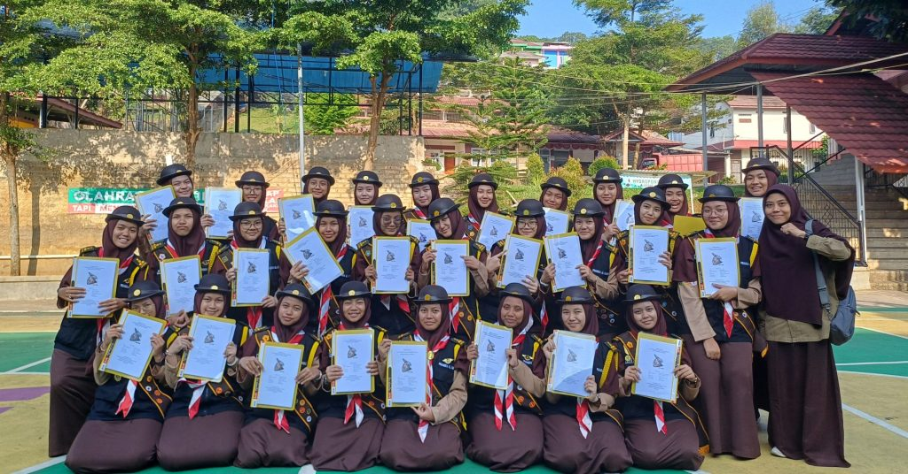

28 Santri Akhwat SMA dan MA Al-Kahfi Dilantik sebagai Pramuka Penegak Garuda di Tapakan Garuda Tahap II Kwarcab Bogor 2025
Cibinong, 2 Agustus 2025 — Sebanyak 28 santri akhwat kelas 12 dari SMA dan MA Pesantren Terpadu Al Kahfi berhasil menuntaskan tantangan Tapakan Garuda Tahap II dan secara resmi dilantik sebagai Pramuka Penegak Garuda oleh Kwartir Cabang Kabupaten Bogor . Kegiatan ini berlangsung selama 3 hari 2 malam , dari tanggal 31 Juli hingga 2 Agustus 2025 , bertempat di Bumi Perkemahan Cimandala, Cibinong .
Para santri yang tergabung dalam Pasukan Prada Angkatan 3 Gugusdepan 37.116 telah menjalani pembinaan khusus di bawah bimbingan Kak Rizqi Yuliarti, S.Pd. , atau yang akrab disapa Kak Yul , sebagai pembina mereka.
Selama kegiatan berlangsung, peserta menaklukkan berbagai rintangan fisik dan mental, memperdalam wawasan kepramukaan, serta mengasah keterampilan hidup. Tapakan Garuda ini bukan sekadar ajang pelantikan, namun menjadi pengalaman transformatif bagi para santri yang berhasil melewati setiap tahapan dengan penuh semangat dan integritas.
Kegiatan ini juga menjadi wadah silaturahmi dan kolaborasi antaranggota pramuka dari berbagai wilayah se-Kabupaten Bogor, memperkuat rasa kebersamaan dan semangat pengabdian.
Nama-nama peserta yang berhasil dilantik antara lain :
Hana Kamila Ahmad
Shana Shafira
Aulia Salsabila Ramadhani Putri
Najwa Putri Shaliha
Raihani Azizah
Zahira Salsabila Awaludin
Aisha Shabrina
Zulfa Fitri Nursyifa
Alia Afida
Jauharoh Izdihar Rofifah
Elvia Zahra Satriyo
Maura Nurul Safira
Keisya Nasywa Azaela
Keysha Safira Danastri
Aliya Ghassani Nadhira Fatania
Faiz Ayesha Ceyda Emira
Fathiyah Hasna Aqilah Nugroho
Olivia Dianty Fairuz Shappir
Aprilia Hafidzah Rani
Shafiyyah Azzahra
Safa Adini Zhafira
Tazkiatunnisa Azzahra
Rajni Amelia Wibowo
Namyta Rahmanisa
Namyra Syarfalyaa Winarto
Azmi Nailatul Izzah
Atika Syakirah
Kegiatan Tapakan Garuda ini diharapkan dapat menjadi sumber inspirasi bagi santri lainnya untuk terus mengembangkan bakat, potensi, dan semangat kepemimpinan , serta membentuk karakter tangguh, mandiri, dan berkontribusi bagi masyarakat.
Sumber: SMAIT Al Kahfi · Arsip publik per 17 September 2026.
Kembali ke berita